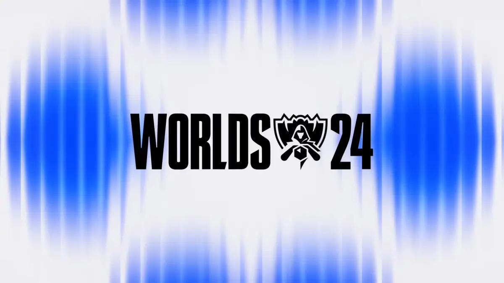
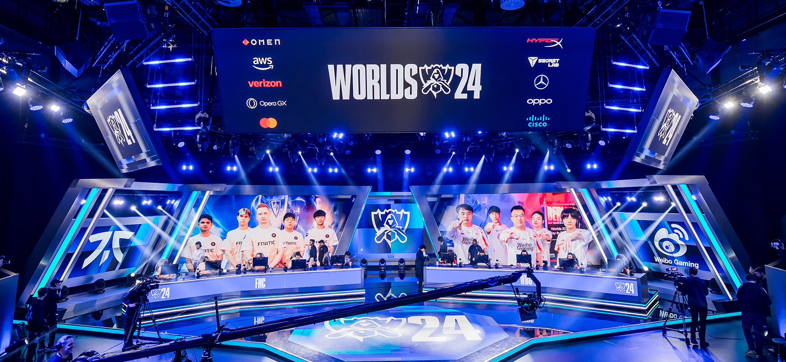

The League of Legends World Championship began in 2011 as the crowning event of Riot Games’ competitive League of Legends ecosystem. Initially held during DreamHack Summer in Sweden, the tournament has grown into one of the largest and most influential annual esports events in the world. From its modest beginnings with a $100,000 prize pool and eight teams, the event now includes 22 teams representing top-tier regional leagues. Over the years, Riot Games has refined the qualification process, established franchised leagues (LCK, LPL, LEC, and LCS), and enhanced global representation with the introduction of Play-Ins and the Swiss Stage. Worlds is now synonymous with high production values, elite-level gameplay, and an enormous international fanbase.
Riot Games is the exclusive organizer and regulatory authority of the League of Legends World Championship, managing all aspects of competition, rules, logistics, and broadcasting.
Only one game is featured: League of Legends, Riot Games’ flagship multiplayer online battle arena (MOBA) title, renowned for its strategic depth, team-based mechanics, and massive global player base.
The 2023 and 2024 League of Legends World Championships (Worlds) feature 22 teams, with further refinements expected in future editions. Teams qualify through regional leagues such as the LCK, LPL, LEC, and LCS, with additional representation from regions like the PCS, VCS, LJL, CBLOL, and LLA. The tournament begins with the Play-In Stage, where lower-seeded teams compete in a double-elimination format to secure spots in the Main Event.
Following the Play-In, the Swiss Stage involves 16 teams competing in a five-round Swiss format, where three wins advance teams and three losses lead to elimination. The top eight teams progress to the Knockout Stage, a single-elimination bracket with all matches played as best-of-five (Bo5). Worlds is a truly global tournament, rotating host cities annually to enhance fan engagement and competitive integrity, with match formats varying from best-of-one (Bo1) to best-of-five (Bo5) across stages.
The prize pool for the League of Legends World Championship (Worlds) varies each year but typically starts around $2 million, with the total amount significantly increasing through crowdfunding via in-game item sales, such as the Worlds Championship skins and team icons. A portion of the revenue generated from these sales is distributed among participating teams, incentivizing performance and engagement. Based on trends from 2022–2023, the prize distribution usually allocates around $500,000 to $600,000 for the 1st place team, roughly $300,000 for 2nd place, with decreasing amounts awarded to the rest based on their final standings. Even teams eliminated in the Play-In Stage receive a portion of the pool, ensuring that all qualifying teams are financially supported. This model emphasizes long-term sustainability in the competitive scene. In-game cosmetics continue to be a major source of team revenue, strengthening the connection between fans and players while allowing the community to directly support their favorite teams.
The League of Legends World Championship delivers comprehensive global live coverage, ensuring fans everywhere can experience every moment of the action. Matches are streamed across multiple platforms and in a wide range of languages, making the tournament accessible to a diverse international audience. Here's where you can tune in and what language options are available.
The production value of Worlds is renowned for its spectacular stage designs, breathtaking visual effects, and highly polished broadcasts. The event features elaborate opening ceremonies, dramatic team entrances, and immersive lighting that enhance the excitement of each match. Combined with compelling player narratives and team rivalries, the production elevates the viewing experience, making the League of Legends World Championship an iconic event in both esports and mainstream entertainment.

The League of Legends World Championship (Worlds) is held in cities with strong esports infrastructure and a deep connection to the game’s global community, such as Los Angeles, USA, and Paris, France. These venues are carefully selected to reflect the championship’s prestige and provide a world-class experience for players and fans alike. The global nature of the tournament is reflected in its location choices, which draw fans from around the world, contributing to the growing legacy of Worlds as the pinnacle of competitive gaming.
Dempsey, I. (2023, November 21). How did Worlds 2023 reach the highest peak viewership in esports history? Esports Charts. https://escharts.com/news/how-worlds-2023-pv-record
Esports Charts. (2023, November 21). How did Worlds 2023 reach the highest peak viewership in esports history? https://escharts.com/news/how-worlds-2023-pv-record
Esports Charts. (2024, November 2). 2024 League of Legends Worlds hits new record of 6.94M Peak Viewers. https://escharts.com/news/2024-league-legends-worlds-record
Esports Insider. (2024, November 3). League of Legends Worlds 2024 becomes most-viewed esports event ever. https://esportsinsider.com/2024/11/league-of-legends-worlds-2024-viewership